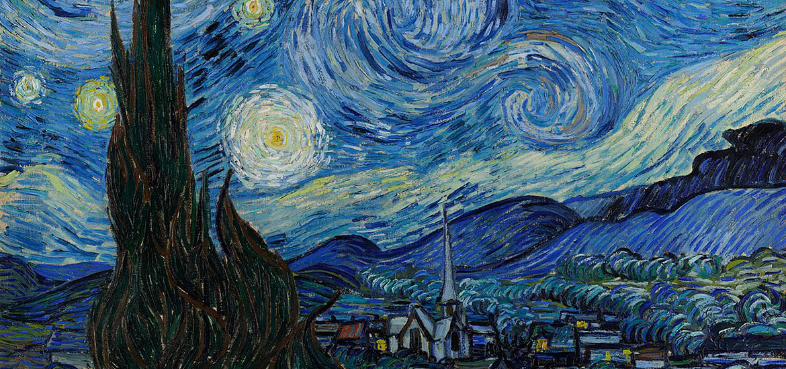

Obra: Noite Estrelada
A obra retrata a vista da janela de um quarto do hospício de Saint-Rémy-de-Provence, pouco antes do nascer do sol, com a adição de um vilarejo idealizado pelo artista. A tela faz parte da coleção permanente do Museu de Arte Moderna de Nova Iorque desde 1941.